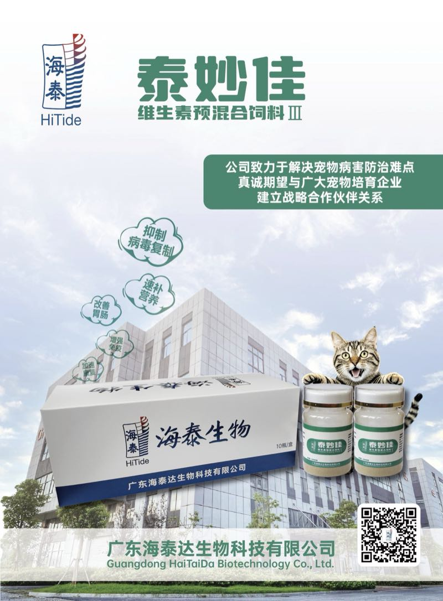
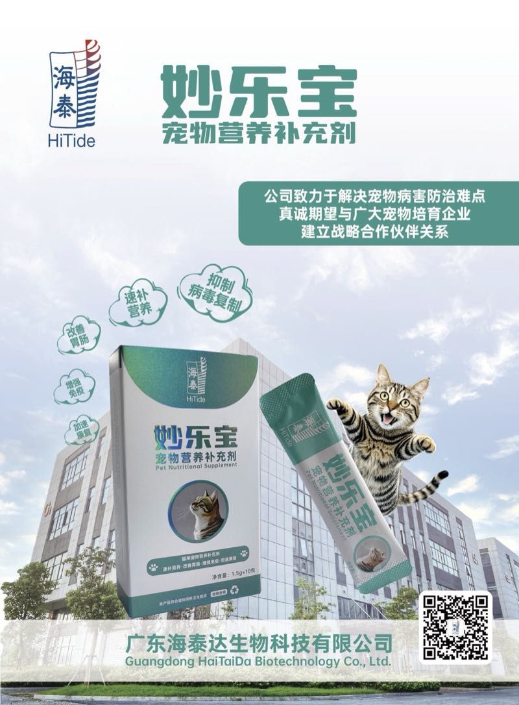
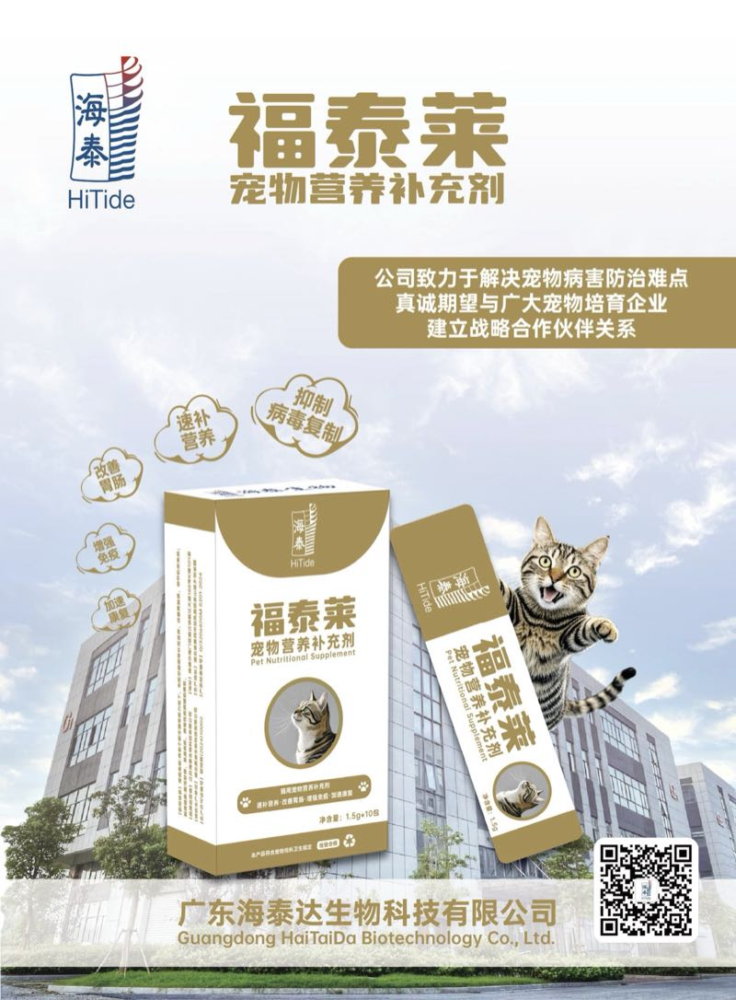
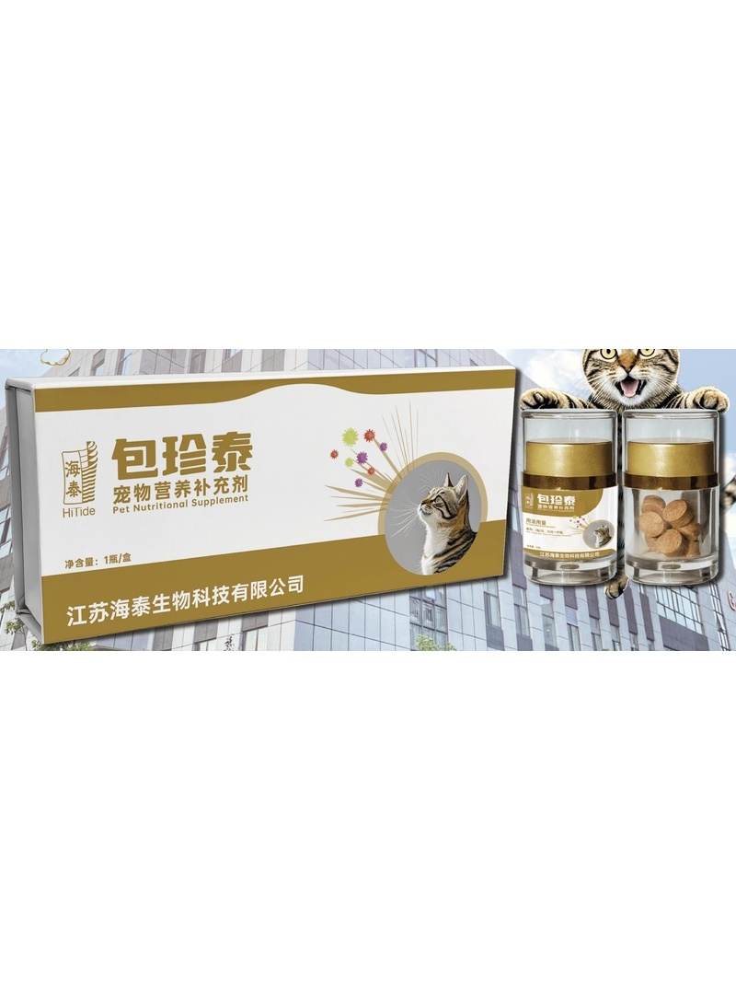
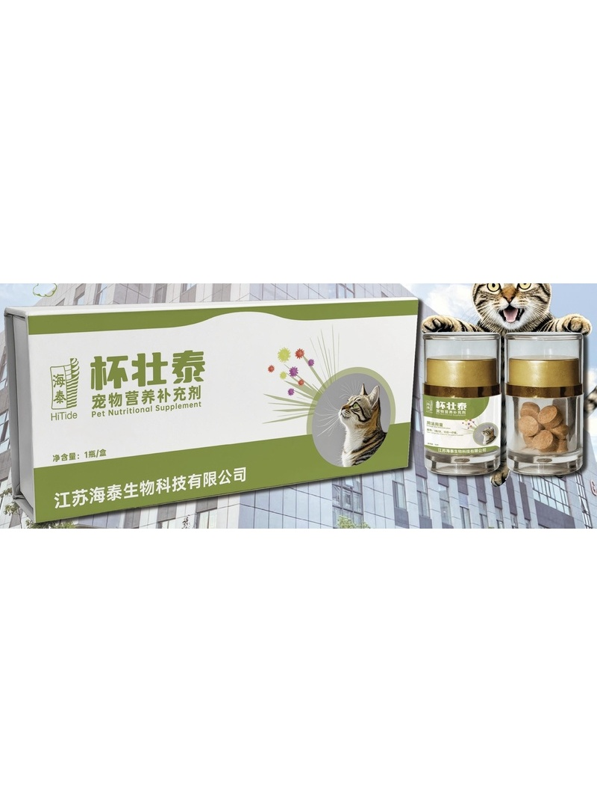
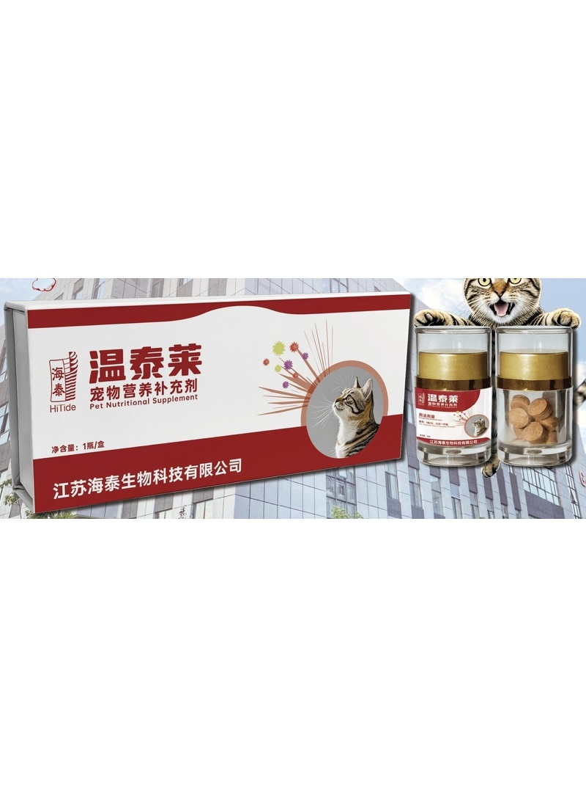
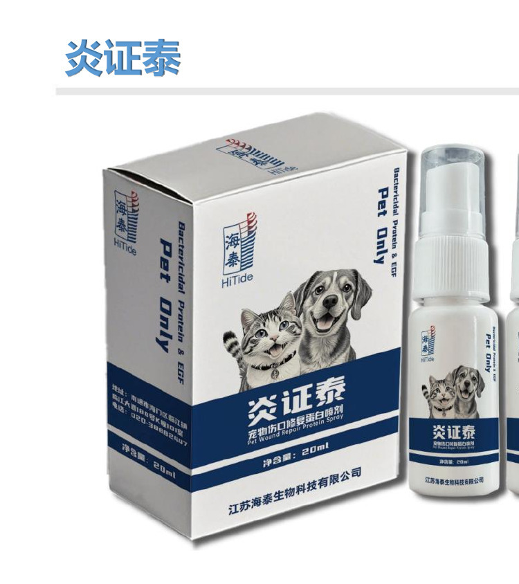

产品矩阵Product Matrix
宠物 · 鸽 · 鱼 · 虾 · 蛙 · 畜禽 · 牛/羊 全场景产品矩阵
已上市产品 41 款，宠物 / 鸽 / 鱼 / 虾 / 蛙 / 畜禽 / 牛 / 羊全场景覆盖，结合蛋白技术贯穿全产品线。41 products launched, covering pets / pigeons / fish / shrimp / frogs / livestock / cattle / sheep across all scenarios, with receptor-binding protein technology running through the entire product line.

猫用Cat
泰妙佳TaiMiaoJia
维生素预混合饲料 IIIVitamin Premix Feed III
抑制病毒复制Inhibits viral replication滋补营养Nourishes and tonifies改善胃肠Improves gastrointestinal health增强免疫Boosts immunity
查看详情 →View Details →

猫用Cat
妙乐宝MiaoLeBao
宠物营养补充剂（猫用）Pet Nutritional Supplement (Cat)
抑制病毒复制Inhibits viral replication速补营养Rapid nutrient boost改善胃肠Improves gastrointestinal health增强免疫Boosts immunity
查看详情 →View Details →

猫用Cat
福泰莱FuTaiLai
宠物营养补充剂（猫用）Pet Nutritional Supplement (Cat)
抑制病毒复制Inhibits viral replication猫传腹 FCoVFeline FIP FCoV植物中药抗病毒Botanical antiviral (TCM)10-15 天疗程10-15 day course
查看详情 →View Details →

猫用Cat
包珍泰BaoZhenTai (Cat)
宠物营养补充剂（猫用片剂）Pet Nutritional Supplement (Cat, Tablets)
抑制病毒复制Inhibits viral replication猫疱疹Feline herpes植物中药抗病毒Botanical antiviral (TCM)10-15 天疗程10-15 day course
查看详情 →View Details →

猫用Cat
杯壮泰BeiZhuangTai
宠物营养补充剂（猫用片剂）Pet Nutritional Supplement (Cat, Tablets)
抑制病毒复制Inhibits viral replication猫杯状Feline calici直接口服Direct oral administration
查看详情 →View Details →

猫用Cat
温泰莱WenTaiLai
宠物营养补充剂（猫用片剂）Pet Nutritional Supplement (Cat, Tablets)
抑制病毒复制Inhibits viral replication猫瘟Feline panleukopenia (FPV)10-15 天疗程10-15 day course
查看详情 →View Details →

猫用Cat
炎证泰YanZhengTai
广谱抗菌蛋白外用喷剂Broad-spectrum Antimicrobial Protein Topical Spray
广谱抗菌蛋白Broad-spectrum antimicrobial proteinEGF + FGF21EGF + FGF21促进愈合Promotes healing外用喷涂Topical spray
查看详情 →View Details →

犬用Dog
泰旺佳TaiWangJia
维生素预混合饲料 IIIVitamin Premix Feed III
抑制病毒复制Inhibits viral replication速补营养Rapid nutrient boost改善胃肠Improves gastrointestinal health增强免疫Boosts immunity
查看详情 →View Details →
查看全部 41 款产品View all 41 products · 按物种与疫病筛选Filter by species and disease
进入产品中心 →Enter Product Center →